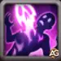
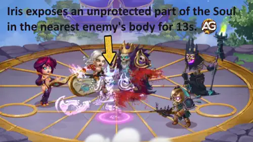
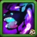
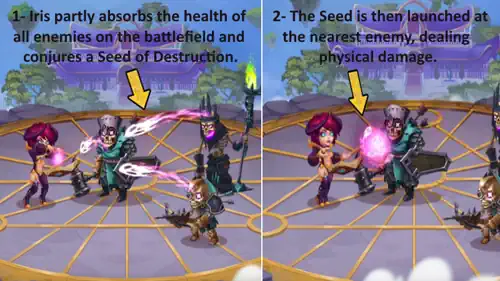
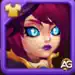
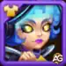
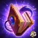

Once a brilliant teacher of magic, Iris let her ambition lead her into forbidden power. Now, bound to the shadows, she’s back with unmatched destructive energy. This guide reveals how to build, equip, and unleash her full potential in Hero Wars: Dominion Era!
From devastating pure damage that cuts through tanks to strategic team setups that amplify her dark arts, you’ll learn how to make Iris one of your most lethal Mages. Whether you’re a beginner or veteran player, this guide will help you master her every spell.
Iris Guide - Hero Wars: Dominion Era, a game developed by Nexters.
Who Is Iris?
Iris is a backline Mage who uses Intelligence as her main stat. Once a respected mentor, she became a vessel of forbidden magic after stealing the Archdemon’s Umbra tome, forever transforming her into a warlock driven by power and vengeance.
Class: Mage
Position: Back Line
Main Stat: Intelligence
With her first skill, Iris inflicts devastating pure damage that ignores defenses, making her one of the few heroes capable of quickly melting tanks like Corvus or Julius.
Pair her with Nebula ou Celeste to enhance her magic power, and she becomes a fearsome main damage dealer capable of turning battles in your favor.
Iris Pros and Cons - Hero Wars: Web & Facebook
✅ Pros
High Burst Damage: Iris’s Expose Soul can instantly eliminate even strong tanks when properly timed.
Pure Damage Output: Her damage bypasses armor and magic defense, making her effective against high-defense heroes.
Strong Synergy: Works extremely well with heroes who can focus or finish weakened enemies, such as Dante, Keira, or K’arkh.
Effective in Both Offense and Defense: Can be used in Arena and Guild Wars for versatile team compositions.
⌠Cons
Low Survivability: Iris is fragile and can be easily killed by physical damage dealers before using her skills.
Energy Dependent: Needs to charge energy to activate Expose Soul, making her vulnerable to heroes like Jorgen.
Weak Against Magic Counters: Cornelius and Rufus can completely shut her down.
Positioning Sensitive: Her effectiveness depends on team formation and how quickly she targets the main tank.
Not Ideal for Long Fights: In extended battles, she may lose efficiency if her burst doesn’t finish key targets early.
Iris Skills Upgrade Priority - Hero Wars: Dominion Era
Learn how Iris’s skills work and which ones to upgrade first! This guide explains each ability in simple terms so you can build her power effectively.

Expose Soul
How it works: Iris reveals the soul of the nearest enemy for 13 seconds. Any damage the soul takes is instantly transferred as pure damage to the enemy’s real body — this means it ignores armor and magic defense completely. It’s especially strong against tanks and heroes with high defenses.
Formula: Pure Damage = (200% Health + Ivl * 350 + 100).
Evolution Priority:Very High – This is Iris’s most powerful skill. It defines her entire playstyle, allowing her to destroy tanks by dealing unavoidable damage. Max this one first for the biggest battle impact.

Skill - Expose Soul, Hero Wars Dominion Era.

Otherworldly Creature
How it works: Iris summons a dark familiar near the farthest enemy. The creature moves toward her, biting enemies along the way. Each bite hits harder than the last, so it deals increasing Physical Attack as it returns to Iris.
Formula Physical Attack: (37% Magic Attack + Ivl * 65) for the first bite, and each next bite adds Physical Attack (9% Magic Attack + Ivl * 25).
Evolution Priority:High – This skill provides steady magic damage and charges Iris’s synergy ability. It’s a great secondary source of power and should be leveled after Expose Soul.
How it works: After the familiar returns to Iris, it transfers all the energy (Soul Fury) it collected from its bites. Each charge boosts Iris’s next basic attack, adding powerful Physical Attack.
Evolution Priority:Medium High – This skill adds solid bonus damage when combined with the familiar’s attacks. It’s very useful for consistent extra DPS but not as critical as her main damage skill.
How it works: Iris drains a bit of health from all enemies, creates a Seed of Destruction, and launches it at the nearest enemy. The attack deals physical damage equal to the total amount of health absorbed.
Formula Health absorbed: (25% Magic Attack + Ivl * 80 + 3200) health absorbed per enemy.
Evolution Priority:Medium – This ability helps deal some extra damage, but since it depends on enemy health and isn’t pure damage, it’s less effective than her main abilities. Upgrade it last if you have spare resources.

Skill - Seed of Destruction, Hero Wars Dominion Era.
Best Skin for Iris Hero Wars: Dominion Era
Find out which Iris skins are truly worth investing in! This guide explains what each skin does, how it boosts her stats, and the right upgrade order.

Default Skin (Intelligence)
Stats gain: Intelligence +1,365
- Magic attack from Intelligence: +4,095
- Magic defense from Intelligence: +1,365
- Physical attack from Intelligence: +1,365
Evolution Priority:High – This skin boosts Iris’s main stat, Intelligence, increasing her damage, defense, and overall performance. It’s always a solid early investment.
Total of Intelligence Skin Stones for max level:
30,825

Cybernetic Skin
Stats gain: Magic Attack +10,650
Evolution Priority:Very High – This is Iris’s most important offensive skin. It directly increases her Magic Attack, boosting all her damaging skills, including her pure damage scaling. Prioritize this one first for maximum damage output.
Total of Intelligence Skin Stones for max level:
55,410
Beach Skin
Stats gain: Health +106,645
Evolution Priority:Medium – The Beach Skin increases survivability, which can help Iris survive area damage. However, since she fights from the backline, it’s less impactful than her attack-based skins.
Total of Intelligence Skin Stones for max level:
55,410
Stellar Skin
Stats gain: Armor +10,650
Evolution Priority:Low – Armor doesn’t help Iris much since she relies on distance and magical damage. This skin has minor defensive value, so it should be upgraded only if you already maxed the others.
Total of Intelligence Skin Stones for max level:
55,410
Masquerade Skin
Stats gain: Armor Penetration +10,650
Evolution Priority:Medium High – This skin gives Armor Penetration, improving the physical damage from her Seed of Destruction skill. It’s not essential but adds nice versatility if you use her in mixed-damage teams.
Total of Intelligence Skin Stones for max level:
55,410
Iris Glyph Evolution Priority
Iris greatly benefits from glyphs that enhance her offensive magic potential, allowing her to destroy enemy souls faster. Secondary glyphs boost her survivability against strong teams.
1st Glyph - Magic Attack
Stats gain: +6,500
Evolution Priority:Very High – Magic Attack directly boosts all of Iris’s offensive skills, making this glyph her top priority to maximize overall damage output.
2nd Glyph - Health
Stats gain: +62,200
Evolution Priority:Medium-High – Health gives Iris better survivability, allowing her to survive long enough to cast her deadly burst combo, especially useful in Arena and CoW fights.
3rd Glyph - Magic Defense
Stats gain: +6,500
Evolution Priority:Medium – Magic Defense is situationally helpful when facing strong mages, but doesn’t affect Iris’s offensive output directly.
4th Glyph - Armor Penetration
Stats gain: +6,500
Evolution Priority:High – Armor Penetration helps her physical damage components and synergy effects deal consistent damage against armored enemies, making it a valuable secondary offensive stat.
5th Glyph - Intelligence
Stats gain: +1,135
- Magic Attack from Intelligence: +3,405
- Magic Defense from Intelligence: +1,135
- Physical Attack from Intelligence: +1,135
Evolution Priority:High – Intelligence gives a strong bonus to Magic Attack (+3,405), making it almost half as effective as a Magic Attack skin, plus a boost to Magic Defense. A solid stat for balanced power and durability.
Iris Artifact Evolution Priority Hero Wars: Dominion Era
Iris’s artifacts directly influence her magic damage, survivability, and overall combat consistency. Prioritizing the right ones greatly boosts her burst potential and support value for the team.

Weapon Artifact – Grimoire of Enslaved Souls
Stats gain: Magic Attack +50,190
Evolution Priority:Very High – This artifact activates with Iris’s ultimate skill “Shieldbreaker†and grants a strong Magic Attack buff to the entire team for 9 seconds. It directly scales her burst damage and is essential for both PvP and PvE battles. Upgrading this artifact first provides the biggest damage increase.
Book Artifact – Tome of Arcane Knowledge
Stats gain: Health +83,649, Magic Attack +16,731
Evolution Priority:High – The book offers valuable Health for survivability and extra Magic Attack for consistent scaling. It helps Iris stay alive long enough to activate her main damage combo. A great balance between power and durability, making it her second priority.
Ring Artifact – Ring of Intelligence
Stats gain: Intelligence +6,249
- Magic Attack from Intelligence: +18,747
- Magic Defense from Intelligence: +6,249
- Physical Attack from Intelligence: +6,249
Evolution Priority:Medium-High – The Intelligence ring provides a solid passive boost to Magic Attack and Magic Defense, improving overall performance. However, it doesn’t have a team-wide effect or activate with skills, so it comes after the weapon and book in upgrade order.
Best Patronage for Iris
Discover the best pets for Iris in Hero Wars: Dominion Era and learn how each patronage bonus enhances her powerful magic damage and survival in battle.
Albus is the best pet for Iris because his patronage directly increases pure damage, the main source of Iris’s destructive power. Since her first skill, Expose Soul, transfers pure damage to the target, Albus amplifies her total damage output dramatically. His patronage stats (Magic Attack and Physical Attack) also scale well with Iris’s damage formula, making him ideal for both PvE bosses and PvP tanks.
Biscuit is a good alternative for Iris when fighting healing-heavy teams like those with Celeste or Martha. His skill reduces all healing received by enemies hit by Iris’s attacks. This helps Iris secure kills faster, especially when her magic attacks hit multiple targets. However, Biscuit doesn’t boost her direct damage as much as Albus, which is why he ranks second.
Oliver focuses on survivability, healing the master when their health drops below 50%. While this can help Iris stay alive against burst attacks, she benefits more from offensive support due to her backline position and pure damage scaling. Therefore, Oliver is a defensive choice for longer fights, placing him third in priority.
How to Counter Iris Hero Wars: Dominion Era
Learn the best heroes to counter Iris in Hero Wars: Dominion Era. Each counter takes advantage of Iris’s weaknesses, reducing her magic impact or preventing her deadly pure damage combo.
Cornelius
Cornelius is a strong counter to Iris because his Heavy Wisdom skill targets the enemy with the highest Intelligence, which is always Iris. His monolith can deal massive burst damage, often eliminating her instantly. In addition, his Rune of Suppression reduces Magic Attack, weakening Iris’s damage output and making her skills much less effective.
Jorgen
Jorgen counters Iris by blocking her energy gain through his Torment of Powerlessness. Since Iris relies heavily on charging her energy to unleash Expose Soul, Jorgen prevents her from activating it quickly. This delays her damage burst, giving your team time to eliminate her before she becomes dangerous.
Rufus is the hardest counter to Iris because his Rakashi’s Oath makes him immune to magic and pure damage exactly what Iris deals. When Iris tries to hit him with Expose Soul or any of her magic-based skills, Rufus simply revives, rendering her main attacks useless. This makes him the perfect tank to completely nullify Iris’s offensive power.
Iris Best War Flag Hero Wars
Iris benefits the most from flags that enhance her magic burst potential, weaken enemy defenses, or increase her energy gain to activate Expose Soul faster in battle.
War Flag of Readiness:
The War Flag of Readiness is one of the best options for Iris. It grants 100 energy to the rearmost hero every 20 seconds, helping Iris activate Expose Soul more frequently. Since Iris is positioned in the backline, she can benefit from this bonus effectively.
Iris and Team Benefit: This flag allows Iris to start dealing Pure Damage much earlier, supporting her team by quickly weakening the enemy tank and opening a path for damage dealers to finish the fight.
War Flag of Frost:
Every 18 seconds, this flag casts Frost on enemies, reducing their skill levels by 2 for 8 seconds. This significantly weakens the enemy’s damage output and survivability, giving Iris more time to activate her Pure Damage skills safely.
Iris and Team Benefit: Works well in control-based or defensive teams where Iris can capitalize on weakened enemies to maximize her burst potential.
War Flag of Decline:
This flag decreases the enemy team's healing by 10%, making it easier for Iris to finish off heroes whose souls she exposes. It’s particularly useful against heal-heavy teams.
Iris and Team Benefit: Complements Iris’s burst damage perfectly by preventing healers like Martha or Celeste from saving exposed targets.
Best Teams for Iris - Hero Wars: Dominion Era
Iris Best Team 1
Pet
Main Pet
Iris Best Team 2
Pet
—
Main Pet
Iris Hero Guide Conclusion - Hero Wars: Dominion Era
Iris is a highly destructive backline mage whose strength lies in her ability to deal massive Pure Damage and eliminate key targets quickly. Her skills, especially Expose Soul, allow her to bypass defenses and take down even the toughest tanks when properly supported.
To maximize her effectiveness, prioritize glyphs and artifacts that boost Magic Attack and Intelligence, use pets like Albus for extra pure damage, and select War Flags that accelerate energy gain or weaken enemy defenses.
While she is fragile and positioning-dependent, a well-coordinated team can unlock her full potential, making Iris a game-changing hero in both PvE and PvP battles.
About the Author
Alexandre Domingos holds a postgraduate degree in Engineering and works as a Production Supervisor. In his spare time, he explores the gaming world as a YouTuber and blogger at Alexandre Games, combining his passion for technology and strategy. He has been immersed in gaming since the age of 5, starting on classic platforms like MSX, Master System, Nintendo, and even an old 286 PC. Since 2019, Alexandre has also been playing Hero Wars and Mobile Legends, among other mobile games, creating guides, tutorials, and analyses for the community.
Did you like our Iris Guide for Hero Wars Web and Facebook? Is there something you didn't understand or would like to suggest changes to? We invite you to join our comment section on the Alexandre Games Blog page. Feel free to express your opinion, clarify your doubts, and share your suggestions. Click the button below to get started:


 30,825
30,825